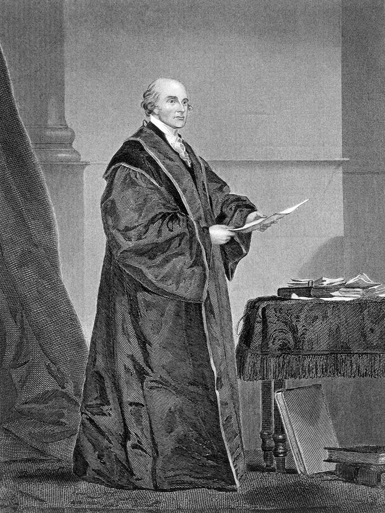

The Judiciary Act of 1789 created the federal judiciary as it’s known today. Remember, the Supreme Court was established in Article III of the Constitution, but it was left up to Congress to set up lower federal courts. As in the rest of the federal government, the court system was small compared to what it is today. The original Supreme Court had six justices. At various points in American history, the number of Supreme Court justices has changed, going as high as 11 and settling at 9, where it remains today. Congress has the power to decide the number of Supreme Court justices.
Why hasn’t Congress changed the number of justices recently?
Although there’s likely a temptation to add members of the Court that would agree with the dominant party in Congress, no party remains in power indefinitely. Keeping the current number of justices can be seen as a tradition that has held up because changing the number could quickly become a nasty political contest.
John Jay was appointed by President George Washington as the first Chief Justice of the Supreme Court. Under his leadership, the Supreme Court set the tradition and tone for future generations of Supreme Court Justices. One important decision during Jay’s tenure was the claiming of judicial review for the courts.
